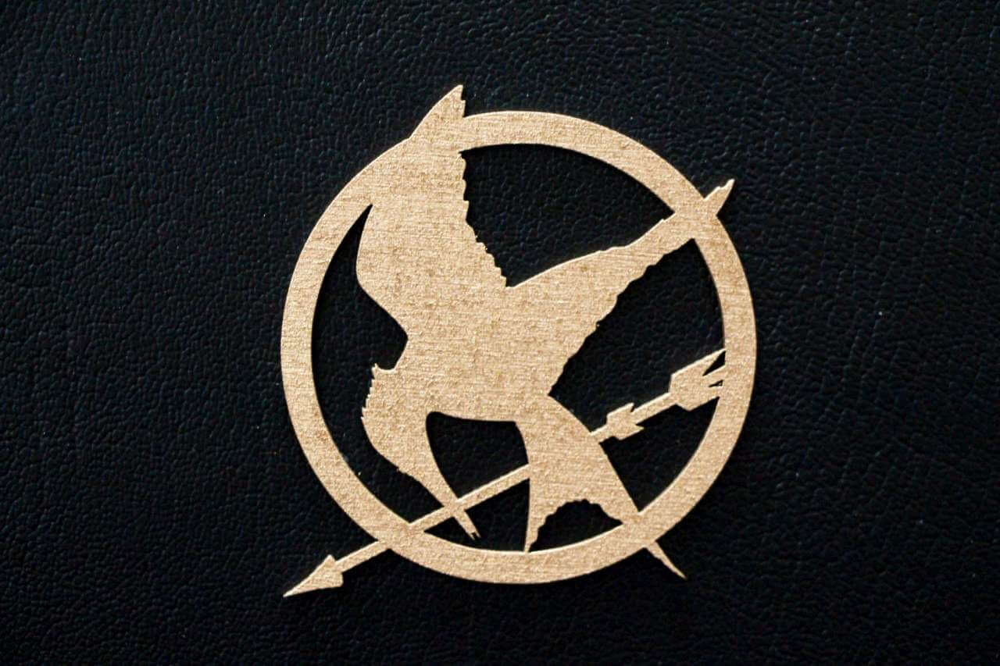
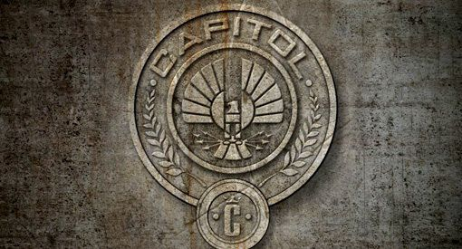
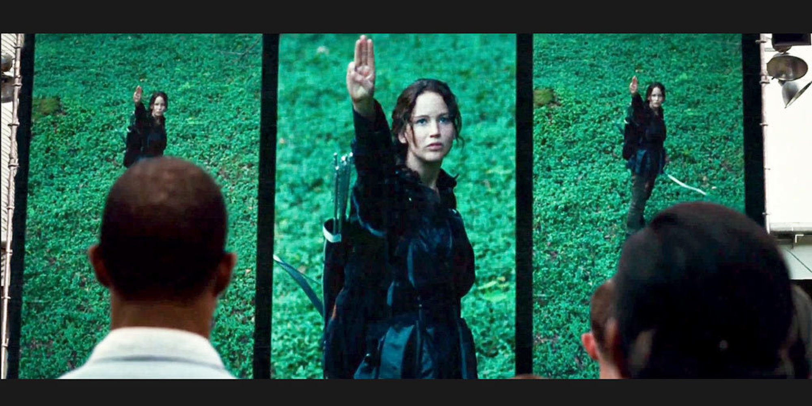
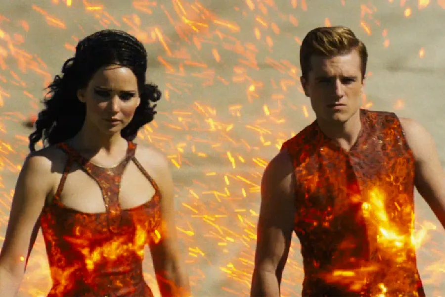

Hunger Games Symbolism
Overview
Suzanne Collins' The Hunger Games series is rich with symbolism that enhances the depth of its dystopian world and explores complex themes such as power, survival, and rebellion. The use of symbols throughout the narrative adds layers of meaning and helps readers understand the struggles and motivations of the characters. Below, we explore some of the key symbols found in The Hunger Games and what they represent.
The Mockingjay
Arguably the most prominent symbol in the series, the Mockingjay is introduced as a bird that represents both hope and rebellion. The Mockingjay itself is a hybrid, the result of a failed government experiment that combined mockingbirds with jabberjays, a bird designed to spy on citizens. The bird becomes a symbol of defiance when Katniss Everdeen wears it as a pin, and later, when it becomes the emblem of the rebellion against the Capitol. The Mockingjay represents the resilience of the oppressed people of Panem and the idea that even in the face of overwhelming oppression, resistance can still rise. As Katniss becomes the face of the revolution, the Mockingjay's significance grows, representing both the cost of rebellion and the possibility of change.
The Capitol
The Capitol, the heart of power in Panem, is not only a physical location but also a symbol of wealth, control, and excess. It is the embodiment of the systemic inequality that defines the world of The Hunger Games. The Capitol's inhabitants live in luxury while the districts are kept in poverty and forced to participate in the brutal Hunger Games. The Capitol's extravagant fashion, technology, and lifestyle highlight the vast disparity between the ruling elite and the working class, and the Capitol's oppressive rule represents the dangers of unchecked political power.
The Three-Finger Salute
The Three-Finger Salute, a gesture of solidarity and defiance, becomes a powerful symbol of rebellion. It is first seen when Katniss shows her respect for Rue, a fellow tribute, after Rue’s death. Later, the salute becomes a symbol of the resistance against the Capitol, especially in District 12. It represents unity, resistance, and the hope for a better future, even in the darkest of times. As the series progresses, the salute takes on greater significance, especially after Katniss’s role as the “Girl on Fire” and the Mockingjay. It is a constant reminder that the oppressed people of Panem can unite and stand up against their oppressors.
Fire
Fire, and particularly the imagery of Katniss as the "Girl on Fire," plays a significant symbolic role throughout the series. Initially, fire represents Katniss’s inner strength and passion as she is thrust into the brutal spectacle of the Hunger Games. Her costume and the imagery associated with her during the Games highlight her fierce determination to survive and protect her loved ones. Over time, fire becomes a symbol of rebellion. As Katniss becomes the face of the revolution, the imagery of fire—particularly her role as the "Girl on Fire"—is associated with the spreading of rebellion, igniting the fires of change in the hearts of the districts. In this way, fire represents both destruction and renewal, as it has the power to both burn down the existing system and spark the possibility of rebuilding a better one.